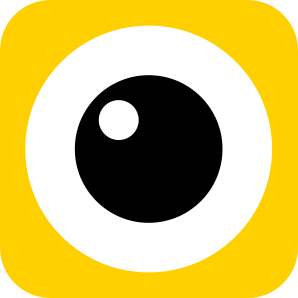

//= template/header.html
<!-- START CONTENT  -->

<div class="box">
    
    <span class="count">5</span>

    <svg id="organic-blob" width="150" height="250" xmlns="http://www.w3.org/2000/svg"  fill="#ff2900">

        <g filter="url(#goo)">
        <circle r="50" cy="172.5" cx="75">
            <animateTransform attributeType="xml" attributeName="transform" type="rotate" from="0 72.5 175" to="360 72.5 175" dur="2s" repeatCount="indefinite"/>
            </circle>
        <circle r="50" cy="177.5" cx="75">
            <animateTransform attributeType="xml" attributeName="transform" type="rotate" from="360 77.5 175" to="0 77.5 175" dur="3s" repeatCount="indefinite"/>
            </circle>
        <circle r="50" cy="175" cx="72.5">
            <animateTransform attributeType="xml" attributeName="transform" type="rotate" from="0 75 172.5" to="360 75 172.5" dur="4s" repeatCount="indefinite"/>
            </circle>
        <circle r="50" cy="175" cx="77.5">
            <animateTransform attributeType="xml" attributeName="transform" type="rotate" from="360 75 177.5" to="0 75 177.5" dur="3.5s" repeatCount="indefinite"/>
            </circle>

        </g>

        <g filter="url(#goo)" class="bubbles" cy="20"></g>
    </svg>

    <svg class="mask" xmlns="http://www.w3.org/2000/svg" version="1.1">
        <defs>
          <filter id="goo">
            <feGaussianBlur in="SourceGraphic" stdDeviation="10" result="blur" />
            <feColorMatrix in="blur" mode="matrix" values="1 0 0 0 0  0 1 0 0 0  0 0 1 0 0  0 0 0 18 -8" result="goo" />
            <feBlend in="SourceGraphic" in2="goo" />
          </filter>
        </defs>
      </svg>
</div>

<!-- END CONTENT  -->
//= template/footer.html